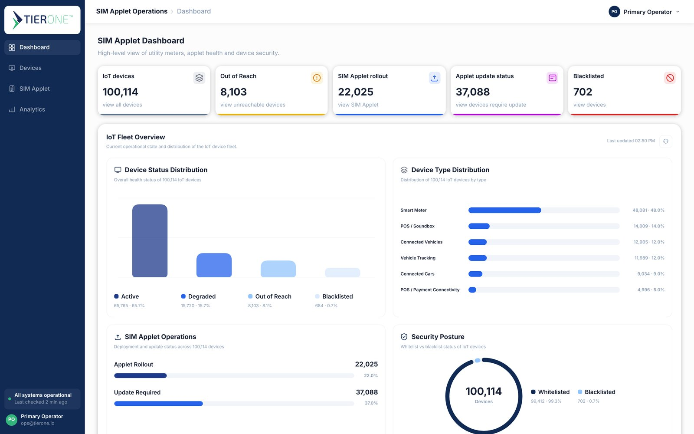
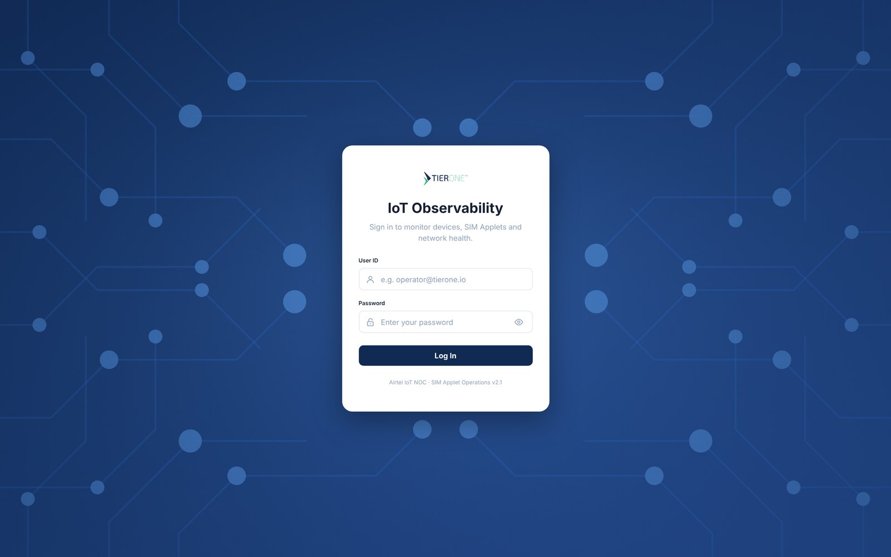
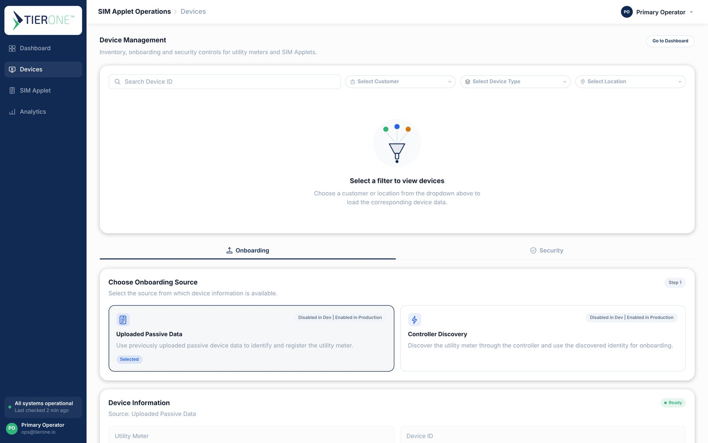
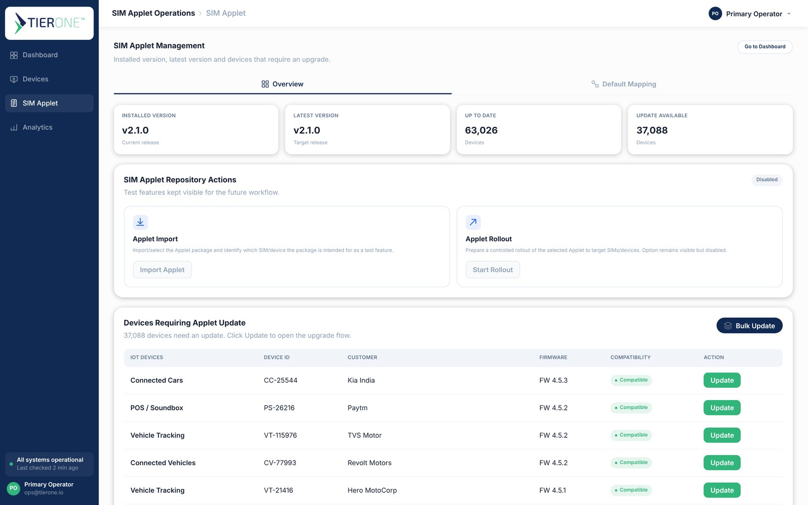
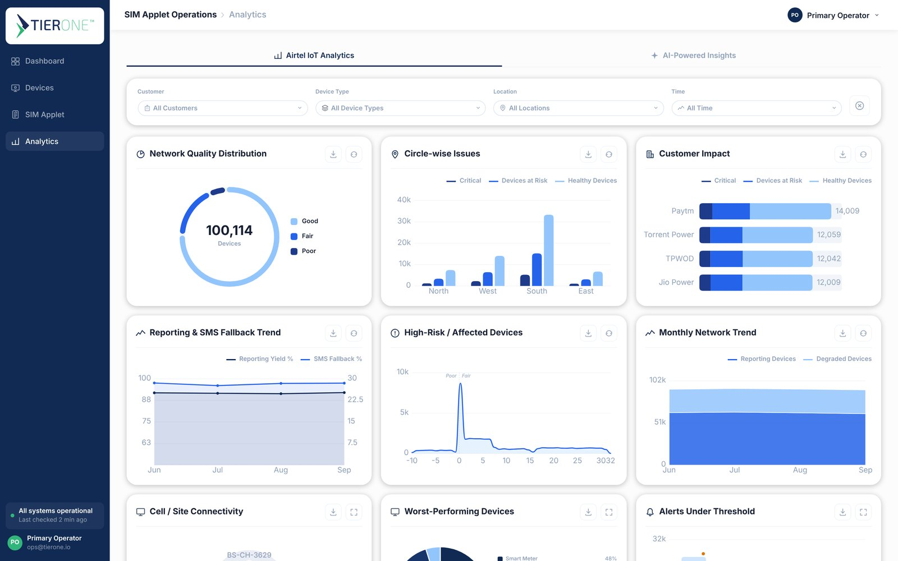

Empathize
Shadowed NOC shifts and profiled all 22 columns of the master dataset.
- Interviews
- Data profile
One command center for a 100,114-device IoT fleet. Operators see fleet health, roll out SIM Applet updates safely and trace a failing cell tower in three clicks.

A telecom NOC watches smart meters, payment soundboxes and connected cars on one cellular network. I designed and built the screen they open first every shift.
Reduced from a 1,000,000-row master file with a stratified, validated sample.
Utilities, fintech and automotive: Paytm, Torrent Power, Jio Power, Adani, Hero MotoCorp, Kia and more.
Grouped into 4 Airtel circles.
per device
65.7% Active · 15.7% Degraded
From login to AI insights.
Hand-built in SVG, no chart library.
Each week ended with something operators could react to: a data profile, a problem frame, a flow, a clickable prototype, then working code.
Shadowed NOC shifts and profiled all 22 columns of the master dataset.
Framed one question: which fault is hurting which customer, right now?
Compared tools, ran a SWOT and drew the task flows.
Low-fi grids, then high-fidelity screens on one token system in Figma.
Coded in React + TypeScript, tested with operators, shipped on Vercel.
Operators had all the data and none of the answers. The fix was less about adding features and more about the order in which questions get answered.
NOC operators tracked 1,000,000 IoT devices in one 22-column Excel file. Finding which tower was failing which customer took hours.
A dashboard that answers “is anything wrong?” in five seconds, then lets operators drill from a circle to a BTS to the exact devices, and run capped, confirmed SIM Applet updates on real data.
8 one-on-one interviews with operators and network engineers, a 32-person survey across operations, and a column-by-column profile of the master dataset.
Every interview followed the same four blocks, so answers could be compared.
I recorded role, experience and shift for segmenting, then how often each problem type appears, how long root-cause takes and which features people would use first.
“I don’t need more data. I need to know which tower to call about.”
Operator · Chennai NOC · Interview 3Thousands of red rows a day. Without grouping by cell site, one bad BTS looks like 400 separate problems.
The master Excel is the only source of truth, so every question starts by filtering a file too big to open smoothly.
A wrong applet push can knock thousands of meters offline, so updates happen in tiny batches, by hand.
Operators juggle three kinds of tools. Each solves a slice; none connects a device fault to the customer it hurts.
| Aspect | Excel + manual triage | Vendor IoT portals | Legacy NMS tools | IoT Observability |
|---|---|---|---|---|
| Focus | Raw device records | One device type or vendor | Network elements, not devices | Device, applet and network health together |
| Fault grouping | None | Per device | Per cell site | Circle → BTS → devices |
| SIM Applet rollout | One by one | Vendor-specific | Not available | Bulk, capped at 1,000, confirmed |
| Customer impact | Hand-built pivots | Single customer | Not available | All 12 customers, one chart |
| Scale & speed | Freezes on large files | Fast but siloed | Fast, heavy setup | 100K+ rows, instant filters |
| Learning curve | Low, error-prone | A new login per vendor | Expert-only | 4-item navigation |
The three tasks operators do most, from their first click to done. Each decision point became a guardrail in the UI.
Scroll sideways inside the flow on small screens.
I folded seven standalone pages into four sidebar sections with tabs. Old links like /security and /default-mapping redirect to their new homes.
Every screen started as a pen sketch, then became a greyscale high-fidelity wireframe with real labels and layout before any color. Pick a screen to compare the two.
 LOW FIDELITY · SKETCH
LOW FIDELITY · SKETCHCustomer, device type, location and time sit on top, so one change updates every card.
Each card answers one question, in a chart picked for that data.
Every card exports its own live data, with no trip to a reports page.
The sidebar footer shows when data last refreshed.
 LOW FIDELITY · SKETCH
LOW FIDELITY · SKETCHEvery support call starts with “which device?”, so its name and config lead the page.
Version and network health sit side by side, so a failed update is easy to tell apart from bad signal.
Network issue and data security get one row each, which stays calm when there is nothing to report.
“Back to dashboard” stays top right, so a deep dive never strands the operator.
 LOW FIDELITY · SKETCH
LOW FIDELITY · SKETCHDevice, ID and customer come first, so operators see what they are about to touch.
Each row has its own Update button, and “Bulk update” sits top right for the whole selection.
Eligible and selected counts are shown before anything is pushed to a device.
At most 1,000 devices per session, so a bad build can’t reach the whole fleet.
 LOW FIDELITY · SKETCH
LOW FIDELITY · SKETCHSeven cities sit in Airtel’s four circles, laid out north, south, east and west.
Each node names its circle first and its cities second, matching how the NOC talks.
A ranked list gives exact numbers where the compass only gives position.
This sketch became the circle → BTS drill-down in the shipped Analytics screen.




Navy and blue carry the interface. Red, amber and green are kept for status only, so a chart segment is never mistaken for an alert. Tap a swatch to copy its hex.
8.25 → 16.5px scale, set at 0.75× the desktop spec so operators see more rows without scrolling.
clicks from a spike to the failing BTS
max drift in customer share after the 1M → 100K reduction
devices per bulk session, previewed and confirmed
runtime libraries: React, React DOM, React Router
Profiling the columns first told me which charts mattered and which filters operators really need.
A red “sample data” banner and an “AI not connected yet” note build more trust than a polished fake.
Keeping red, amber and green for status made alerts readable at a glance.
Virtualized rows and page-sized scans are why 100K records feel instant.